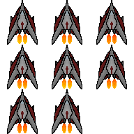

Welcome
This is the landing page for my personal website, where I can showcase my many projects which include:
- Java simulations of traffic using multithreading, used to tune the timing of traffic lights at
junctions.
- An augmented reality application which would overlay arrows onto the ground, helping people unfamiliar with
the area navigate around.
- Many examples of machine learning solutions, across a wide array of disciplines.
And many more, which can be found on the projects page!
